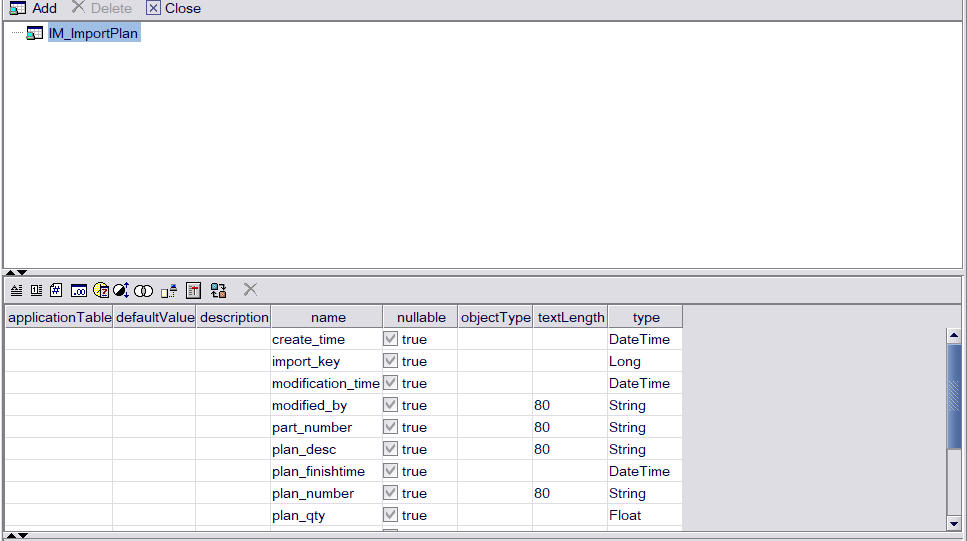

第一步：创建原始表：用create语句
create table IM_ImportPlan
(
plan_key int IDENTITY (1,1) PRIMARY KEY
plan_number varchar(80) not null,
part_number varchar(80) not null,
plan_qty Float not null,
work_shop varchar(80),
plan_type int not null,
plan_starttime datetime ,
plan_finishtime datetime,
status int ,
route_name varchar(80),
plan_desc varchar(80),
remarks varchar(80)
create_time datetime,
modification_time datetime,
modified_by varchar(80)
)
第二部： 创建At表

第三部：
编写list 修改数据库连接地址与账户名密码
<bean id="IMPLAN" class="com.alibaba.druid.pool.DruidDataSource">
<!-- 基本属性 url、user、password -->
<property name="url" value="jdbc:sqlserver://47.98.107.150:1433;DatabaseName=MESPDB" />
<property name="username" value="MESPDB" />
<property name="password" value="Seedoo123" />
<!-- 配置初始化大小、最小、最大 -->
<property name="initialSize" value="5" />
<property name="minIdle" value="5" />
<property name="maxActive" value="10" />
<!-- 配置从连接池获取连接等待超时的时间 -->
<property name="maxWait" value="10000" />
<!-- 配置间隔多久启动一次DestroyThread，对连接池内的连接才进行一次检测，单位是毫秒。
检测时:1.如果连接空闲并且超过minIdle以外的连接，如果空闲时间超过minEvictableIdleTimeMillis设置的值则直接物理关闭。2.在minIdle以内的不处理。
-->
<property name="timeBetweenEvictionRunsMillis" value="600000" />
<!-- 配置一个连接在池中最大空闲时间，单位是毫秒 -->
<property name="minEvictableIdleTimeMillis" value="300000" />
<!-- 设置从连接池获取连接时是否检查连接有效性，true时，每次都检查;false时，不检查 -->
<property name="testOnBorrow" value="false" />
<!-- 设置往连接池归还连接时是否检查连接有效性，true时，每次都检查;false时，不检查 -->
<property name="testOnReturn" value="false" />
<!-- 设置从连接池获取连接时是否检查连接有效性，true时，如果连接空闲时间超过minEvictableIdleTimeMillis进行检查，否则不检查;false时，不检查 -->
<property name="testWhileIdle" value="true" />
<!-- 检验连接是否有效的查询语句。如果数据库Driver支持ping()方法，则优先使用ping()方法进行检查，否则使用validationQuery查询进行检查。(Oracle jdbc Driver目前不支持ping方法) -->
<property name="validationQuery" value="select getdate()" />
<!-- 单位：秒，检测连接是否有效的超时时间。底层调用jdbc Statement对象的void setQueryTimeout(int seconds)方法 -->
<!-- <property name="validationQueryTimeout" value="1" /> -->
<!-- 打开后，增强timeBetweenEvictionRunsMillis的周期性连接检查，minIdle内的空闲连接，每次检查强制验证连接有效性. 参考：https://github.com/alibaba/druid/wiki/KeepAlive_cn -->
<property name="keepAlive" value="true" />
<!-- 连接泄露检查，打开removeAbandoned功能 , 连接从连接池借出后，长时间不归还，将触发强制回连接。回收周期随timeBetweenEvictionRunsMillis进行，如果连接为从连接池借出状态，并且未执行任何sql，并且从借出时间起已超过removeAbandonedTimeout时间，则强制归还连接到连接池中。 -->
<property name="removeAbandoned" value="true" />
<!-- 超时时间，秒 -->
<property name="removeAbandonedTimeout" value="80"/>
<!-- 关闭abanded连接时输出错误日志，这样出现连接泄露时可以通过错误日志定位忘记关闭连接的位置 -->
<property name="logAbandoned" value="true" />
<!-- 根据自身业务及事务大小来设置 -->
<property name="connectionProperties" value="oracle.net.CONNECT_TIMEOUT=2000;oracle.jdbc.ReadTimeout=10000"></property>
<!-- 打开PSCache，并且指定每个连接上PSCache的大小，Oracle等支持游标的数据库，打开此开关，会以数量级提升性能，具体查阅PSCache相关资料 -->
<property name="poolPreparedStatements" value="true" />
<property name="maxPoolPreparedStatementPerConnectionSize" value="20" />
<!-- 配置监控统计拦截的filters -->
<!-- <property name="filters" value="stat,slf4j" /> -->
<!-- <property name="proxyFilters">
<list>
<ref bean="log-filter" />
<ref bean="stat-filter" />
</list>
</property> -->
<!-- 配置监控统计日志的输出间隔，单位毫秒，每次输出所有统计数据会重置，酌情开启 -->
<property name="timeBetweenLogStatsMillis" value="120000" />
</bean>
</beans>
第四部：
编写subroutines
importSubroutine("MES_Common_Time")
importSubroutine("MES_PP_Common")
function selectATWData(ds){
// dsItem = class com.ftpc.common.utilities.DataSourceUtility::getInstance().getDataSource("Im_plan")
sql = "select '',plan_key,plan_number,part_number,plan_qty,work_shop,plan_type,plan_starttime,plan_finishtime,
status,route_name,plan_desc,remarks,create_time,modification_time,modified_by
from IM_ImportPlan"
vectorResult = class com.ftpc.common.utilities.JdbcUtility::executeQuery(dsItem, sql)
if(vectorResult.size() == 0){
return
}
for(i = 0; i < vectorResult.size(); i++)
{
atrow = createATHandler("IM_ImportPlan").createATRow()
sprtResult = vectorResult.get(i)
atrow.setValue("plan_number",sprtResult[2])
atrow.setValue("part_number",sprtResult[3])
atrow.setValue("plan_qty",sprtResult[4])
atrow.setValue("work_shop",sprtResult[5])
atrow.setValue("plan_type",sprtResult[6])
// atrow.setValue("plan_starttime",sprtResult[7])
// atrow.setValue("plan_finishtime",sprtResult[8])
atrow.setValue("status",sprtResult[9])
atrow.setValue("route_name",sprtResult[10])
atrow.setValue("plan_desc",sprtResult[11])
atrow.setValue("remarks",sprtResult[12])
// atrow.setValue("create_time",sprtResult[13])
// atrow.setValue("modification_time",sprtResult[14])
atrow.setValue("modified_by",sprtResult[15])
response = atrow.save(null,null,null)
responset = class com.ftpc.common.utilities.JdbcUtility::executeUpdatePnuts(dsItem, "update IM_ImportPlan set status = 3 where status = "+sprtResult[9])
}
}
第五部：

importSubroutine("MES_Common_UI")
importSubroutine("MES_Common_Time")
importSubroutine("MES_PR_Common")
importSubroutine("MES_IM_Plan")
function deletesODS(){
dsa = selectATWData(ds)
//
println(dsa)
// println(pse)
}
调用方法 ：执行查询语句bing修改 计划状态